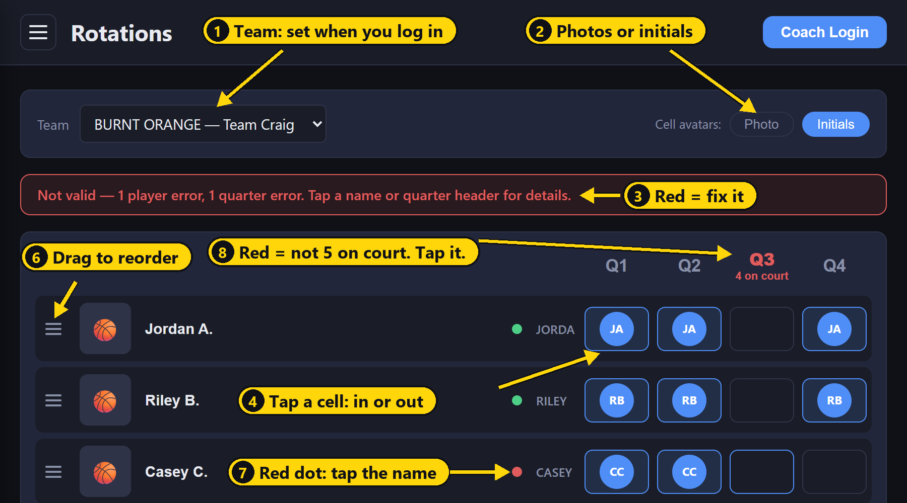
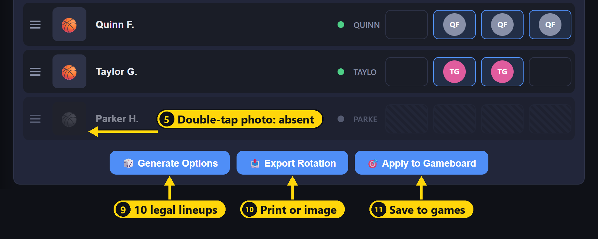
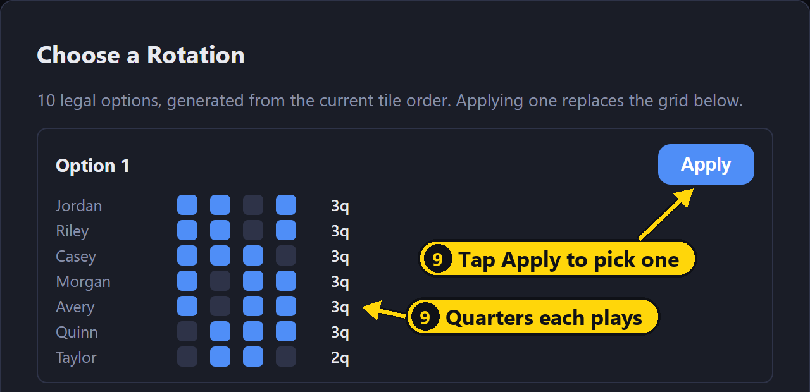

Building a game lineup, step by step
- Log in. Tap Coach Login, pick your name and enter your PIN. The app opens Rotations with your team and players already loaded. You can skip logging in, but then you pick your team from the Team dropdown yourself and nothing is saved to your account.
- Mark absences. Double-tap the photo of anyone who won't be at the game. Do this first, because it changes which rules apply (see The playbook rules below).
- Set your tile order. Drag players by the ≡ handle so the ones you want on the court most are at the top. Your top two will be favored to start and finish.
- Tap 🎲 Generate Options. Look over the 10 mini-grids. Each row shows a player's quarters and their total (for example 3q). Tap Apply on your pick. It replaces whatever was on the grid.
- Fine-tune by hand if you want. Tap cells to swap players. Keep an eye on the red dots and red quarter headers, and fix each one until the banner turns green.
- Apply it to your games. Tap 🎯 Apply to Gameboard. Games without a saved lineup are pre-checked. Games that already have one show a green or red dot and start unchecked. Check what you want and tap Apply. You'll be asked before anything is overwritten, then offered a jump to the Gameboard.
- Share it. Tap 📤 Export Rotation, then Print or Download Image. On a computer, the image is also copied so you can paste it into a text or chat.
Export and Apply to Gameboard both save a copy under Saved Rotations automatically, named like "8-man - Config 3". Saving the same lineup twice doesn't create a duplicate.
The short version
The Rotations page builds your quarter-by-quarter lineup and checks it against the CSBC playing-time rules as you go. Mark who is absent, put your players in the order you want to favor, tap Generate Options, pick one, and send it to the Gameboard.
Logging in takes you straight there. You can also find it in the app menu (☰, top left) under 🔄 Rotations. Anyone can build and export a lineup. You need to be logged in (Coach Login, top right) to save lineups or apply them to your games.
The playbook rules
A lineup is legal only when all of these hold. The page checks every one of them after each tap. "Present" means every player on your roster who is not marked absent.
- Five on the court every quarter. If fewer than 5 players show up, everyone present plays every quarter.
- Everyone plays at least one full quarter in each half. Q1–Q2 is the first half, Q3–Q4 is the second.
- With 7 or more present, everyone sits at least one quarter. Nobody plays all four.
- With 6 or fewer present, the sit-out rule is waived. Players may play all four, but rule 2 still applies.
One result of rule 2: no player can ever sit more than 2 quarters, one per half.
Here is what those rules allow at each attendance level:
| Players present | Quarters each player can play | How the 20 court spots must split |
|---|---|---|
| 8 | 2 or 3 | 4 players play 3 quarters, 4 players play 2 |
| 7 | 2 or 3 | 6 players play 3 quarters, 1 player plays 2 |
| 6 | 2, 3 or 4 | Any mix that adds to 20 (for example 4 play all 4, 2 play 2) |
| 5 | 4 | Everyone plays every quarter |
| Under 5 | 4 | Everyone plays every quarter (short-handed) |
The rules set the minimum. How you use the extra quarters is your call, and the page helps you with that through tile order (below).
Tour of the page
The page is one grid: a row per player, a column per quarter. Each row reads left to right: drag handle (≡), photo, name, status dot, a small initials or first-name tag, then the Q1–Q4 cells.
The numbers on the screenshots match the numbers in the table below. The player names are placeholders.



| # | Part of the page | What it tells you | What you do with it |
|---|---|---|---|
| 1 | Team dropdown | Teams listed as COLOR — Team Coach | Filled in for you when you log in. Change it to view another team. |
| 2 | Cell avatars toggle | Photo or colored initials inside "on" cells | Pick whichever is easier to read. Display only. |
| 3 | Status banner (above the grid) | Green = valid lineup. Red = counts of player and quarter errors | Glance here before you export or apply. |
| 4 | Quarter cells | A face in the cell = on the court that quarter | Tap to put a player in or take them out. |
| 5 | Player photo | Grayed out with hatched cells = absent | Double-tap (double-click on a computer) to mark absent or present. |
| 6 | Drag handle ≡ | Row position = tile order, your priority list | Press and drag up or down to reorder. |
| 7 | Status dot | Green = legal. Red = breaks a rule. Gray = absent | Tap the player's name for the reason, such as "Misses the entire second half (Q3–Q4)." |
| 8 | Q1–Q4 headers | Red with "N on court" = not exactly 5 | Tap for how many to add or remove. |
| 9 | 🎲 Generate Options | 10 legal lineups built from your tile order, with each player's quarter total | Tap Apply on the one you want. See 10 more options for more. |
| 10 | 📤 Export Rotation | Print, or Download Image (a PNG with your team header and a timestamp) | Hand it to your bench or send it to parents. |
| 11 | 🎯 Apply to Gameboard | A checklist of your team's scheduled games | Save this lineup to one or more games. |
| 12 | Saved Gameboards and Saved Rotations (below the grid, logged in only) | Mini-grids of your saved lineups, each with a ✓ or ✕ for valid or not | Tap a mini-grid for Apply to Grid, Apply to Gameboard or Go to Game. Click the title to rename. 🗑️ deletes. |
Tile order matters. It starts as the league's composite ranking. Players higher in the list get more of the extra quarters when you use Generate Options. The top two are also placed in Q1 and Q4 when possible, so your strongest players start and finish the game.
Absent is not the same as benched. An absent player drops out of every rule check and the page recalculates for the smaller group. Leaving a present player's row empty is a rule error.
Common situations
A player shows up late or leaves early. Double-tap their photo to switch them between present and absent, then Generate Options again. The rules change with the head count, so a lineup that was legal for 8 may not be legal for 7.
The banner is red and I can't see why. Tap each red dot's name and each red quarter header. The pop-up names the exact rule broken, or how many players to add or remove from that quarter.
Can I export a lineup that breaks the rules? Yes. You'll see "This is not a valid configuration. Export anyways?" first. Use this only when you have a real reason, and expect to explain it.
My printed or downloaded lineup shows initials, not photos. That's expected. Exports always use initials so every cell prints cleanly.
Who can see my saved lineups? Only you. Saved lineups are stored under your coach login, and other coaches can't see them.
I built a lineup without logging in. Is it gone? The grid is remembered on that phone or computer only, per team. Log in and export or apply it to keep a copy in your account.
How do I reuse last week's lineup? Scroll to Saved Gameboards or Saved Rotations, tap its mini-grid and choose Apply to Grid. That restores its order, absences and quarters, ready to adjust.
I'm on the Gameboard and want to change a lineup. Double-click a team's mini-grid on the Gameboard to jump straight to Rotations with that team selected.